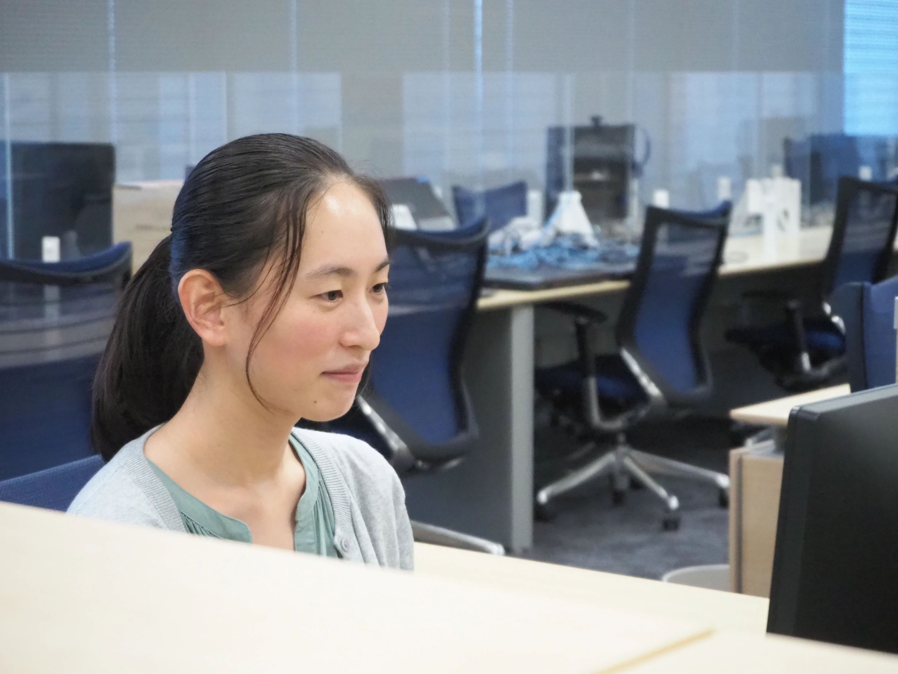
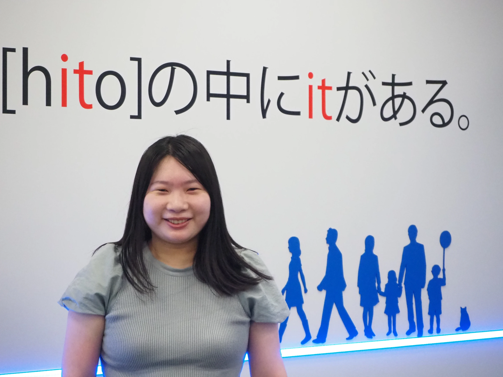

Employee Interview
異なるバックグラウンドを持つ3人の若手リーダーに、入社のきっかけから現在、そしてこれからのキャリアについて聞きました。

INTERVIEW 01
「みんなが働きやすい体制を作ることが理想です」
H・S さん
東京電機大学 情報系卒2019年入社 → 2024年リーダー昇格
READ MORE →

INTERVIEW 02
「評価項目で○がついていないところをなくしたくて」
N・T さん
新潟大学 教育学部卒2019年入社 → 2024年リーダー昇格
INTERVIEW 03
「置かれた環境でできることをただ頑張って続けていたら」
M・E さん
中央大学 理学部卒2020年入社 → 2024年リーダー昇格